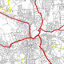
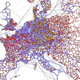
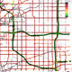
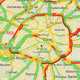

 <div id="vsebina">
    <div class="panel col-xs-12 col-sm-9 ">      
                
           
               <div class="paragraph collapse in col-xs-12 col-sm-8" > 
                <h1 class="glavniNaslov">Podaci o prometu</h1>     
                <p class="bodytext">Izvrsni podaci su najbolja osnova za izvrsne prometne modele. Koristite našu široku ponudu isplativih i prilagođenih prometnih podataka - posebno razvijen za upotrebu s našim softverskim proizvodima.</p>
                            
                <p class="bodytext"><h3>Naš portfelj proizvoda:</h3>
                <ul>
                  <li><div class="infoBox"><b>Karta podataka</b><br><br>Primijenite karte podataka koje su prilagođene i unaprijed pripisane od strane stručnjaka PTV-a a služe  za neposrednu upotrebu pomoću  PTV Visum softwarea za planiranje prijevoza.</div></li>
                  <li><div class="infoBox"><b>Transportni modeli</b><br><br>Validate je jedan od najvećih svjetskih transportnih modela. Mogućnost ekstrakcije bilo kojeg dijela kalibriranog modela, s kapacitetom za izračunavanje prognoze, pruža idealan temelj za lokalne ili regionalne analize.</div></li>
                  <li><div class="infoBox"><b>Povijesni podaci o brzini</b><br><br>S bazom podataka od preko 9 trilijuna anonimnih GPS mjerenja, korisnicima naših softverskih proizvoda u PTV Vision Traffic Suiteu nudimo pristup povijesnim podacima o prometu za ukupno preko 40 zemalja širom svijeta koje pruža TomTom.</div></li>
                  <li><div class="infoBox"><b>Podaci uživo</b><br><br>S najpreciznijim, širokim i aktualnim informacijama u stvarnom vremenu za više od 40 zemalja širom svijeta, korisnicima PTV Optima nudimo isključivo pristup podacima uživo naših partnera INRIX i TomTom koji se mogu koristiti kao osnova za prognoze prometa.</div></li>                  
                </ul> </p>
                
              </div>    
              <div class="paragraph collapse col-xs-12 col-sm-8" id="podaciKarta" >          
              <h2 class="podNaslov">Karte podataka namijenjeni za korištenje u proizvodima PTV Vision Traffic Software</h2>
                       <div><p class="bodytext">Karte podataka su temelj svake transportne mreže i snažno utječu na kvalitetu modela prijevoza. Što su precizniji i širi podaci o mapiranju, to će biti bolje mogućnosti diferencijacije u modelu. PTV Group pruža vam unaprijed pripisane karte prilagođene vašim potrebama koje su idealne za neposrednu upotrebu s PTV Visumom. Naši proizvodi koriste visoke kvalitete komercijalne karte podataka TomTom © i HERE ©, kao i podatke koji su dostupni na OpenStreetMap- u.  To stvara samoodržive pokretne mreže koje su odmah spremne za upotrebu te koje su poboljšane širokim rasponom dodatnih atributa prema specifičnim zahtjevima kupca. To uključuje, na primjer, podatke o klasifikaciji cesta, ograničenju brzine, broju traka, korištenju zemljišta ili točkama interesa (POI). Korisnici stoga u PTV Visumu mogu upotrijebiti izrađene karte kao mrežnu bazu brzo i bez dodatnih koraka, te im na taj način ostavljajući više vremena koje mogu utrošiti na aktivnosti za planiranje prometa.</p><br>
                       <p>Konzistentnost u cijelom nizu PTV Vision Traffic proizvoda znači da karte podataka možete koristiti i za razne druge namjene: za detaljnu analizu malog mjerila, strateška mreža iz PTV Visuma može se eksportirati u PTV Vissim jednim klikom bez gubitka podataka. PTV Vissim se može koristiti za analizu na bazi mikrosimulacije.</p>
                       <h3>Primjeri upotrebe:</h3>
                       Korištenje kompletnih mrežnih modela kao:
                       <ul>
                           <li>Baza podataka na kojima treba stvoriti transportne modele</li>
                           <li>Temelj za prikupljanje podataka temeljenih na GIS-u</li>                                         
                       </ul>
                       
                       <h3>Karte podataka spremne za upotrebu u PTV Visum</h3>           
                         <p>                  
                         Izradite svoj model učinkovito u PTV Visumu. Koristite materijale s karta koje su stručnjaci PTV-a prilagodili za vas kao detaljnu temeljnu mrežu pogodnu za neposrednu upotrebu sa softverom za planiranje prometa PTV Visum. Mreže koje su ažurirane, unaprijed definirane i prilagođene vašim individualnim zahtjevima, uštedjet će vam vrijeme na način da eliminiraju dugotrajno traženje podataka i stvaranje vlasitite mreže te na vam na taj način ostavljaju više vremena kojeg možete iskoristiti za zadatke vezane za planiranje.   
                       </p><br>
                        <p>
                         
                         <h3>Jesnostavan izvoz podataka u PTV Vissim</h3>
                         Upotrijebite model koji ste izradili u PTV Visumu kako biste istražili rezultate. Uz PTV Vision Traffic Suite možete izvesti svoju stratešku mrežu iz PTV Visuma te unijeti u PTV Vissim bez gubitka podataka preiliko ubacivanja istih, a sve u svrhu detaljnije analize koristeći simulacije. 
                       </p>

                      </div>                 
              </div> 

              <div class="paragraph collapse col-xs-12 col-sm-8" id="prijevozniModel" > 
              <h2 class="podNaslov">Validate: Transportni model i izvor prometnih podataka</h2>    
               <p class="bodytext">
                Trenutačno, Validate je jedan od najvećih svjetskih transportnih modela. Kalibrirani model s podacima kapaciteta za izradu prognoze. Sadrži informacije o količinama automobila i kamiona diljem cijele Njemačke mreže glavnih cesta kao i ostatatka Europe. Validate omogućuje izdvajanje željenog dijela modela, pružajući idealnu osnovu za lokalne ili regionalne analize koje bi obično bile pre skupe ili dugotrajne ako bi se pojedini transportni modeli morali raditi samo u tu svrhu.
                </p><br>
                <p>Nadalje, Validate se može koristiti kao izvor podataka zahvaljujući dalekosežnim masovnim prometnim podacima. Sa svojom sposobnošću da stvori prognoze prikladan je za studije prijevoza kako bi procijenio učinke infrastrukturnih mjera. Štoviše, model vam omogućuje da provedete temeljitu analizu lokacije. Izračun zadatka s PTV Visum također pruža informacije o ruti - model ne daje samo informacije o broju vozila koji prolaze kroz određenu lokaciju, također govori i odakle dolaze, gdje idu i kojim putem će se kretati. To donosi vrijedne zaključke koji vam omogućuju procjenu potencijalnih lokacija za nove trgovine ili oglasne panoe (reklame) .</p> 
                <h3>Primjeri upotrebe:</h3>
                      <ul>
                           <li>Stvaranje podmodela za brzu i jeftinu izradu regionalnih ili lokalnih transportnih modela </li>
                           <li>Koristite se u analizama prometa i predviđanjima, primjerice prilikom procjene mjera za izgradnju infrastrukture ili predviđanja prihoda od naplate cestarine</li>
                            <li>Analiza i procjena lokacije, kao i analiza dostupnosti, npr. za industrijske parkove</li>
                            <li>Pružanje podataka o zagušenju prometa, npr. za analizu utjecaja na okoliš poput buke i mapiranja emisija</li>
                            <li>Realni izračun vremena putovanja za dinamičko planiranje rute</li>                                
                       </ul>
                    <h3>Validate moduli:</h3>   
                        <ul>
                           <li><b>Validate Basis</b><br>Označeni model na glavnoj mreži cesta</li>
                           <li><b>ADTw Traffic Volumes</b><br>          Količina automobila i kamiona dobiveni rezultati u Osnovnoj mreži)</li>
                           <li><b>ADTw potreba</b><br>            Matrica potrebe za automobile i kamione, uključujući Validate prometne zone</li>
                           <li><b>Validate Dynamic</b><br>Podaci brzine, podaci potrebe i ostalo za sve dane u tjednu (prikazano za 15 minuta / 1 sat) u Osnovnoj mreži</li>
                           <li><b>Detaljno proširenje mreže</b><br>Nadopunjuje Osnovni model s podređenom mrežom</li>                                                           
                       </ul>
                       
                       <h3>Transportni model spreman za uporabu</h3>        
                         <p>                  
                         Iskoristite prednost oslanjanja na kompletan transportni model koji možete odmah početi koristiti za temeljne analize. Korištenje već generiranih podataka koji su prilagođeni vašem području te koji će prikazivati njihovo podrijetlo, odredište i tok prometa olakšavaju prometnim planerima pripremu zadataka unutar modela te im omogućuju da se bolje usredotoče na rješavanje tih zadataka. 
                       </p><br>
                        <p>
                         
                         <h3>U toku i potpun</h3>
                         Oslonite se na izvanrednu kvalitetu. Transportni model Validate temelji se na kartama podataka koje se kontinuirano ažuriraju. Podaci o strukturi i kalibraciji ažuriraju se svakim godišnjim izdanjem. Svojom standardiziranom i nacionalnom dosljednom metodologijom Validate donosi rezultate modeliranja i sveobuhvatne podatke o količini prometa koji se mogu uspoređivati diljem regija. Navedeni podaci su isprobani i provjereni te učestalo korišteni za javne i komercijalne projekte. 
                       </p>


              </div> 
              <div class="paragraph collapse col-xs-12 col-sm-8" id="podaciBrzina" >             
               <h2 class="podNaslov">Detaljne informacije brzine i "uska grla" za ceste širom svijeta</h2>    
               <p class="bodytext">
               Pomoću baze podataka od preko 9 trilijuna anonimnih GPS mjerenja, korisnicima naših softwareskih proizvoda u PTV Vision Traffic Suiteu možemo ponuditi pristup povijesnim podacima o prometu koji pruža TomTom. Baza podataka sadrži empirijski izmjerene podatke o brzini za ukupno preko 40 zemalja diljem svijeta. Za razumnu cijenu, možemo pružiti korisnicima navedene informacije za vaše unaprijed odabrane regije koje se kasnije mogu upotrebljavati u PTV Visum i PTV Vissim programima.
                </p><br>
                <h3>Upit pojedinih baza podataka s TomTom statistikom</h3>
                <p>Web platforma pruža izravan pristup povijesnim vremenima putovanja. Na temelju toga možete zatražiti podatke za bilo koje vrijeme na bilo koji određeni dan u proteklim godinama počevši od 2008. Rezultati se zatim mogu uvesti izravno u PTV Visum.  Sami možete napraviti zahtjeve ili koristiti podatke koji su već ubačeni u PTV Visum.</p>  <br> 
                
                        <ul>
                           <li><b>Uobičajeno vrijeme putovanja:</b><br>Baza podataka upita za uobičajene rute</li>
                           <li><b>Pretraživanje čvorova:</b><br>Baze podataka upita za uobičajene rute unutar kompletnog čvora</li>
                           <li><b>Uobičajena područja analize:</b><br>Baze podataka upita na razini cijelog područja za prilagođene regije</li>                                    
                       </ul>
                <h3>TomTom profili brzina</h3>
                <p>TomTom prikuplja podatke o prometu i brzini u 26 zemalja koji pokrivaju cestovnu mrežu od preko 35 milijuna kilometara i koristi ih za izradu profila brzine. Specifični profili brzine izrađuju se za svaki radni dan pomoću skupa mjerenja koja su se odvijali u prošlom vremenu. Stručnjaci iz PTV-a pripremaju ove prilagođene profile brzine za upotrebu u PTV Visumu i upotrebljavaju TomTom karte podatka kako bi ih stvorili za svaku dostupnu odabranu regiju.</p>       
                       
                       <h3>Veliku baza podatka</h3>        
                         <p>                  
                         Iskoristite veliku bazu podataka empirijski izmjerenih vremena putovanja iz prošlosti a dostupne su za različite zemlje širom svijeta te datiraju od 2008 godine. Širok raspon različitih formata podataka omogućuje vam da sami odlučite što najbolje odgovara vašim zahtjevima. Naručite točno one podatke koji su vam najvažniji - bilo izravno s web portala ili spremno za ubacivanje u PTV Visum.  
                       </p><br>
                        <p>
                         
                         <h3>Podaci pogodni za korištenje u PTV Vision Traffic Software-u/h3>
                         Iskoristite prednosti unaprijed obrađenih podataka od strane PTV grupe koja je prilagođena vašim individualnim zahtjevima i prilagođena za izravnu upotrebu u PTV Visumu i PTV Vissimu.
                       </p>
              </div>
              <div class="paragraph collapse col-xs-12 col-sm-8" id="podaciZivo"> 
               <h2 class="podNaslov">Podaci uživo za modeliranje prometa u stvarnom vremenu s PTV Optima</h2>         
               <p class="bodytext">Imali zastoja ili da li se desila prometna nesreća u vršnom satu? Koliko brzo se odvija promet kroz mrežu? Podaci o brzini u stvarnom vremenu pružaju dinamičnu sliku promjena uvjeta prometa i omogućuje centrima za upravljanje prometom upravljanje prometnim tokovima. S najpreciznijim, širokim i aktualnim informacijama u stvarnom vremenu u preko 40 zemalja širom svijeta, korisnicima proizvoda PTV Optima  nudimo izravan pristup podacima u realnom vremenu koje omugućuju naši partneri INRIX i TomTom. Ti podaci se mogu koristiti kao osnova za prognoze prometa. </p>
                    <p>
                         
                         <h3>Cjelovita slika trenutne situacije u prometu</h3>
                         Unesite opsežne podatke u stvarnom vremenu u PTV Optima. Naš softver zatim sinkronizira, potvrđuje i spaja podatke. Takvi podaci stvaraju temelj pomoću kojeg se stvara koherentna i cjelovita slika trenutne situacije u prometu.
                       </p>                
              </div>          
          <div class="col-xs-11 col-sm-3">
            <aside>
              <div id="pdfji">
                <b>Dodatne inforamcije:</b>
                <div class="pdf"><a href="../_ostalo/FactSheet_EmpiricalSpeedData.pdf" target="_blank"><i class="fa fa-file-pdf-o" aria-hidden="true"></i>Ulaznica empirijskih podatka o brzini</a></div>                               
              </div>
              <div>
                <a id="mail" href="mailto:info@appia.si" target="_top">Kontaktirajte  nas!</a>
              </div>
              <div id="demoVerzija">
                <a id="mail" href="form.html">Demo verzija</a>
              </div>
              <br>
              <div class="infoBox" id="distributer">                   
               <b id="kontaktDistributerjaNaslov">Kontakt distibuterja</b><br>
               <a href="http://www.appia.si/" target="_blank">Appia d.o.o </a> <br>
               telefon:+386 1 524 05 20<br>
               E: <a href="mailto:info@appia.si" target="_top">info@appia.si</a><br>
              </div>
            </aside>
          </div> 
    </div> <!--/PANEL  -->   
    </div><!--/VSEBINA  -->  
